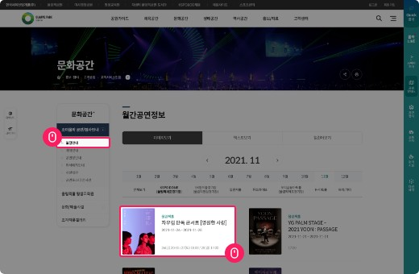
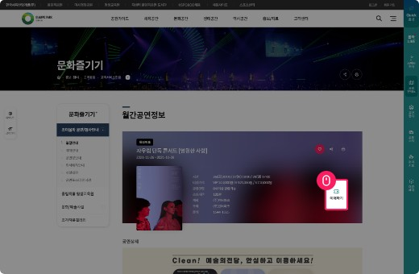
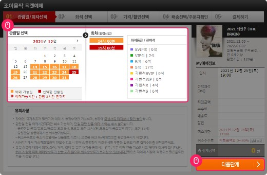
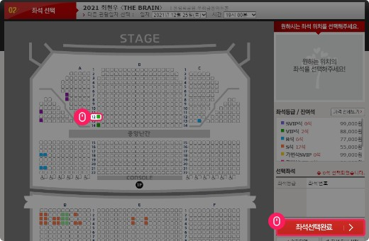
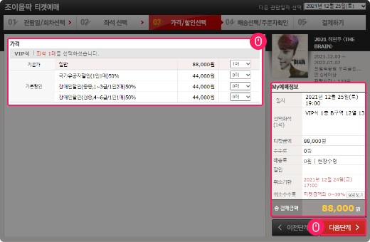
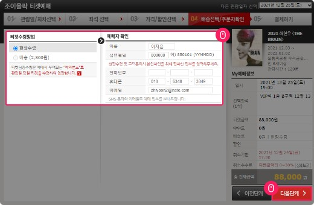

예매안내

입장권 구입방법
- Step 1 공연선택
- Step 2 예매날짜/시간·좌석선택
- Step 3 카드결제 또는 무통장입금
- Step 4 예매완료
공연선택
01공연 상세보기 클릭

02예매하기

03관람일 / 회차 선택
- 관람일 선택
- 회차(관람시간) 선택
- 좌석등급/잔여석 확인
- 다음단계

04좌석선택
- 원하는 좌석선택
- 좌석등급/잔여석 확인
- 좌석선택완료

05가격/할인선택
- 기본가/할인 선택
- 총 결제금액 확인
- 다음단계

06배송선택/주문자확인
- 티켓수령방법 선택
- 예매자 확인
- 결제하기

결제
- 카드결제
- 카드결제를 하시면 바로 결제가 완료됩니다
- 무통장입금
- 무통장 입금으로 결제를 하실 경우에는 예매진행 중에 나오는 가상계좌번호로 입금하시기 바랍니다.
- 가상계좌번호는 입장권 결제마다 개별적으로 부여되는 계좌번호로 입금처리가 되면 실시간으로 결제처리가 됩니다. (입금 확인하실 필요가 없습니다.)
- 가상계좌번호는 부여 받은 후 예매일 기준 다음날 17:00시 (금요일 예매시 익일 오전 11시)까지 유효하며
그 이후에는 자동 소멸되기 때문에 무통장입금이 되지 않습니다.
(예매일 기준 다음날이 주말 및 공휴일일 경우, 주말 및 공휴일도 입금기한에 포함됩니다.) - 예매일 기준 다음날까지 입금이 되지 않으면, 예매하신 좌석신청 권한도 사라집니다. 이후에 다시 예매를 하고 싶으시면 예매신청을 새로 하시면 됩니다.
예매수수료 안내
현장예매 하실 경우에만 예매수수료가 없습니다.
입장권 수령방법
예매진행시 등기수령과 현장수령의 두 가지 배송방법 중 한 가지를 선택하시면 됩니다.
- 현장수령
- 현장수령은 공연당일 공연장 티켓박스에서 티켓을 수령하시면 됩니다.
인터넷 예매시 예매확인서와 신분증을 지참해 주시기 바랍니다.
- 우편배송
- 등기수령은 2,500원의 발송수수료를 부담하시면 원하시는 주소로 등기우편으로 발송해 드립니다.
예약일이 공연일로부터 10일전이어야 합니다.
예매취소
취소 일자에 따라서 취소수수료가 부과됩니다. 예매일 기준보다 관람이 기준이 우선 적용됩니다.
단, 예매 당일 밤 12시 이전 취소시에는 취소 수수료가 없으며, 예매 수수료도 환불됩니다.(취소기한 내에 한함)
| 취소일 | 취소 수수료 |
|---|---|
| 예매 후 7일 이내 | 없음 |
| 예매 후 8일 ~ 관람일 10일 전까지 | 장당 4,000원(티켓금액의 10%한도) |
| 관람일 9일전 ~ 7일전까지 | 티켓금액의 10% |
| 관람일 6일전 ~ 3일전까지 | 티켓금액의 20% |
| 관람일 2일전 ~ 1일전까지 | 티켓금액의 30% |
- 인터파크 예매 · 취소내역에서 직접취소 또는 고객센터(1544-1555)를 통해 예매 취소 가능합니다.
- 티켓이 배송된 이후에는 인터넷 취소가 안되며, 취소마감 시간 이전에 티켓이 인터파크 티켓 고객센터로 반송되어야 취소 가능합니다. 취소수수료는 도착일자 기준으로 부과되며, 배송료는 환불되지 않습니다.
배송방법별 취소 안내
- 현장수령으로 예매한 경우
- 인터넷 예매 고객 : 인터파크 티켓 웹사이트 상단 ‘예매 취소’ 메뉴에서 직접 취소 가능
- 전화 예매 고객 : 인터파크 티켓 웹사이트 상단 ‘예매 취소’ 메뉴에서 직접 취소 가능 또는 고객센터(1544-1555) 연결을 통해 취소 가능
- 배송으로 예매한 경우
- 이미 배송 받은 티켓은 인터넷 및 전화로 취소할 수 없습니다.
- 반드시 취소마감 시간 이전에 티켓이 인터파크 티켓 고객센터로 반송되어야 취소 가능하며, 취소 수수료는 도착일자 기준으로 부과됩니다.
단, 배송료는 환불되지 않으며 일괄배송 상품의 경우 취소에 대한 자세한 문의는 고객센터로 문의해 주시기 바랍니다.
결제수단별 환불방법
- 신용카드 결제 : 일반적으로 당사의 취소 처리가 완료되고 4~5일 후 카드사의 취소가 확인됩니다.
- 취소시점과 카드사에 따라 환급방법과 환급일을 다소 차이가 있을 수 있습니다.
- 취소 시 예매된 결제내역은 취소처리되며, 취소 시점에 다라 취소수수료와 배송료가 재승인될 수 있습니다
- 무통장 입금 결제 : 환불은 접수 완료 후 5~7일 이내에 처리됩니다.
- 티켓 우송 전 : '예매 취소' 시에 환불받을 계좌번호를 남기면, 그 계좌를 통해 취소 수수료를 제외한 금액이 환불됩니다.
- 티켓 우송 후 : 예매하신 티켓을 반송하실 때 예금주와 환불 계좌번호를 함께 보내주셔야 합니다. 환불은 반드시 예매자 본인 명의의 계좌로만 받으실 수 있습니다.
- 휴대폰 결제 : 취소 시 예매된 결제내역은 바로 취소처리되며, 취소 시점에 따라 취소수수료와 배송료가 재승인 될 수 있습니다.
- 휴대폰결제는 당월 예매건만 티켓 웹사이트에서 취소 가능합니다. 당월 예매 취소가 아닌 경우 인터파크 티켓 고객센터로 연락주셔야 취소 가능합니다.
자세한 사항은 인터파크 티켓 홈페이지 이용안내를 참고하시기 바랍니다.